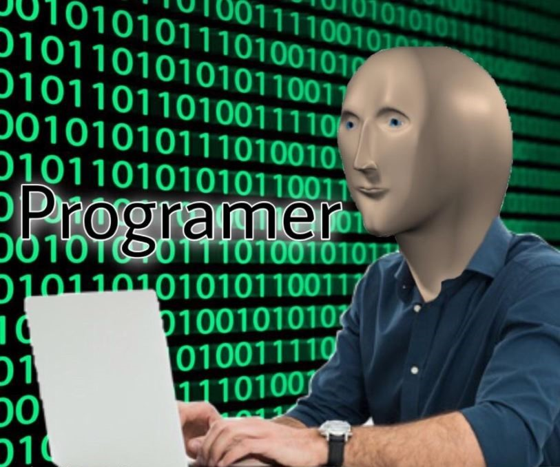
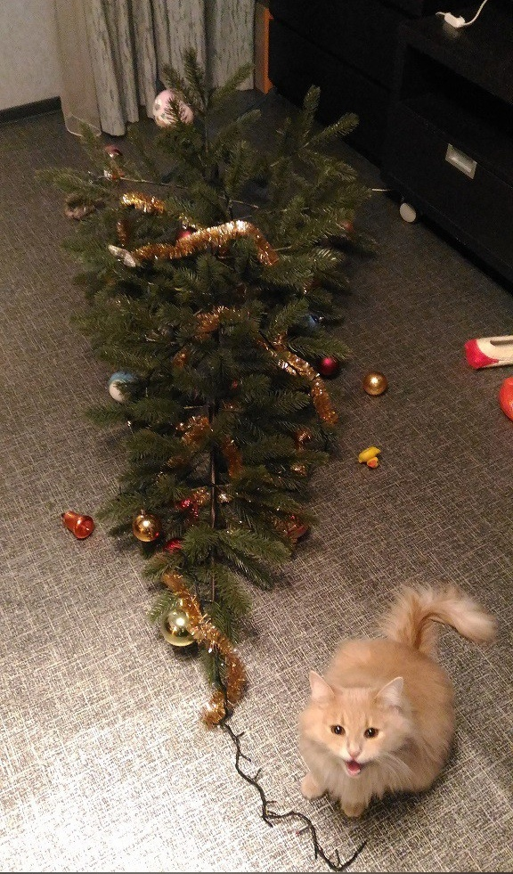
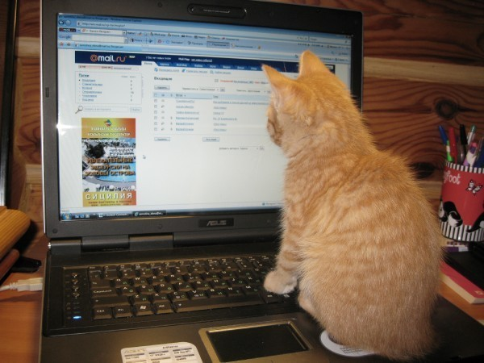
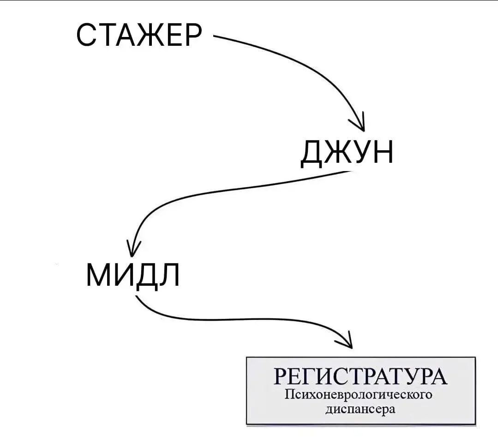

Фритрек и нулевой спринт: Подготовка к работе
<Трансерфингируем реальность>
Это было самое начало пути. На этом этапе важно было проникнуться
основами и настроиться на учёбу. И, возможно, подумать, как новые
знания могут повлиять на ваше будущее.
Весь 2024 год я думал о том, что хотел бы найти для себя какое-либо
новое увлечение, которое будет заряжать меня и приносить искреннее
удовольствие. Желание было огромное, но до октября ничего толкового
в голову не лезло. А потом я прочитал статью о веб-разработке и
понеслось...
1 спринт: Я — чистый лист
<Just do it!>
На первых этапах мы работали со страхами и сомнениями, которые часто
испытывают новички. Один из них — страх перед чистым листом. Это,
конечно же, намного сложнее, чем боязнь куска бумаги. Часто за этим
ощущением скрываются более глубокие вопросы: с чего начать? а вдруг
будет слишком сложно? что, если я не справлюсь?
Сейчас, оглядываясь назад, кажется, что первый спринт был самым
тяжелым. Всё в новинку, безумное количество информации, но как же
всё интересно! Теги, классы, шрифты, разметка и семантика, гриды и
флексы, а в завершение знакомство с gitHub. В моменте казалось, что
освоить всё это невозможно. Но, как говорится, "дорогу осилит
идущий".
1 спринт: А если не получится?
<Я сам!>

Первый проект — позади! Но это всё ещё самое начало пути. Радость
могла быстро померкнуть и смениться ожиданием провала. Или вы,
наоборот, могли вдохновиться успехами и поверить в себя.
Первый самостоятельный проект... Что-то ровно, что-то криво, где-то
изящно, где-то "забиваем гвозди микроскопом", но работает!!! А в
момент, когда не видишь различий между своей вёрсткой и макетом,
чувствуешь полное удовлетворение.
2 спринт: Погоня за идеалом
#perfect

На этом этапе вы уже достаточно разбирались в основах вёрстки, чтобы
понять, как много ещё впереди. Вы могли попытаться погнаться за
идеалом и понять, что он недостижим. А, может, вы вовсе и не
подвержены перфекционизму и вместо того, чтобы сделать идеально,
старались просто сделать.
Тут Новый год на носу, какая учеба? Какие формы? Какие лейблы? Хоть
готовый проект небольшой, а то совсем выгореть можно!..
А если без шуток, то это был очень интересный спринт. Псевдоэлементы
и псевдоклассы, огромное количество информации про доступность в
вебе, а в завершение сложные селекторы, разбираться с которыми
оказалось сплошное удовольствие.
2 спринт: О тех, кто рядом
<Семья>
Всё это время вы были не одиноки (хотя, возможно, иногда и
чувствовали, что одни против целого мира). Вас окружали
одногруппники, команда сопровождения и просто близкие люди, которым
можно пожаловаться, если очередной макет просто так не поддавался.
Осваивать что-то новое легче, когда рядом есть единомышленники, не
правда ли?
Иногда хотелось всё бросить: не читать новые темы, не учить новые
свойства, не писать новый код и не править проект после код-ревью.
Но бросить ты не имеешь права, потому что рядом люди, которые
поддреживают, которые кричат "Ты крутой!", "Все получится!", "Только
вперед!". Такие люди - самая большая награда в жизни.
3 спринт: Обходные стратегии
@media (age>= 60)

На этом курсе вы постоянно решали разные задачи. В какой-то момент
вам могло показаться, что решения просто иссякли. Значит, пришло
время посмотреть на задачу под другим углом.
Вот тут уже всё по-взрослому. Тут и мобилки, и лэптопы и настольные
ПК. Каждое задание в этом спринте было пропитано магией - написал
несколько строк кода и всё адаптировано под любые запросы
пользователей, начиная размером экрана и заканчивая плотностью
пикселей. В такие моменты чувствуешь, что идешь в ногу с современным
вебом и постепенно продвигаешься к гордому званию "верстальщик".
3 спринт: Когда опускаются руки
<Котцентрация>

Во время учёбы часто возникает чувство, когда не знаешь, за что
хвататься. Вроде и проектную пора сдавать, и задачи хочется
порешать, и в теории получше разобраться, и жизнь не забыть пожить.
В такие моменты очень нужна концентрация. Вспомните, откуда вы её
черпали.
А вот с концентрацией никогда проблем и не было. Только садишься за
компьютер, включаешь теорию спринта, а время уже 2 часа ночи и спать
пора давным давно. А ведь хочется еще почитать и поверстать! Ведь
там так всё интересно!
«Сейчас я здесь»
<Войти в IT>

Сейчас вы уже очень много знаете о вёрстке. Но это только начало.
Во-первых, впереди ещё много материала про «красотищу». Во-вторых, с
окончанием курса учёба не заканчивается. Вёрстка — это целый мир. И
этот мир постоянно меняется. Познать его полностью не получится, но
это тот случай, когда важен сам процесс познания. Ведь часто путь —
и есть результат.
Сейчас мой путь в веб-разработке только начинается. Дальше будет
JavaScript - настоящий язык программирования и настоящие серьезные
вызовы и задачи. Уверен, что справлюсь со всем и освою новый для
себя навык.